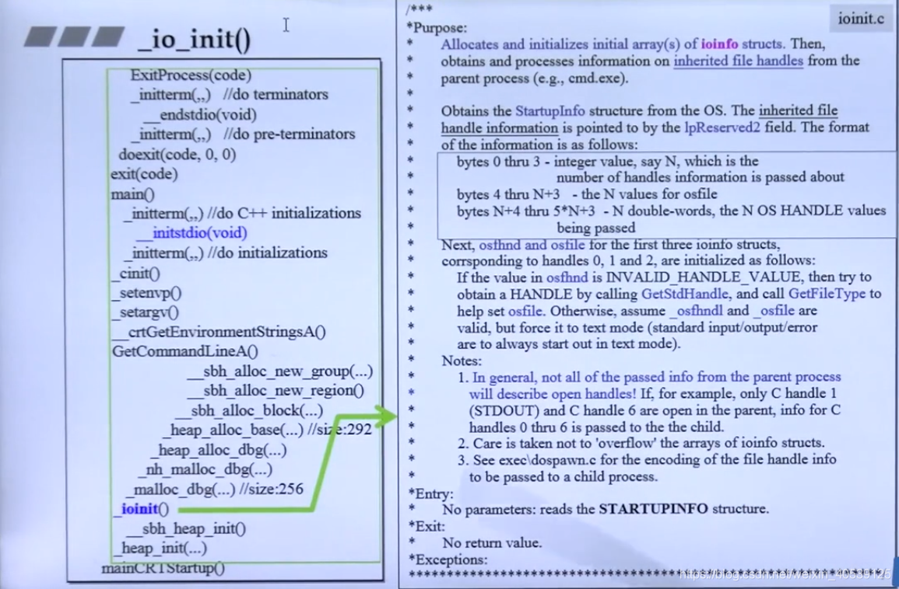
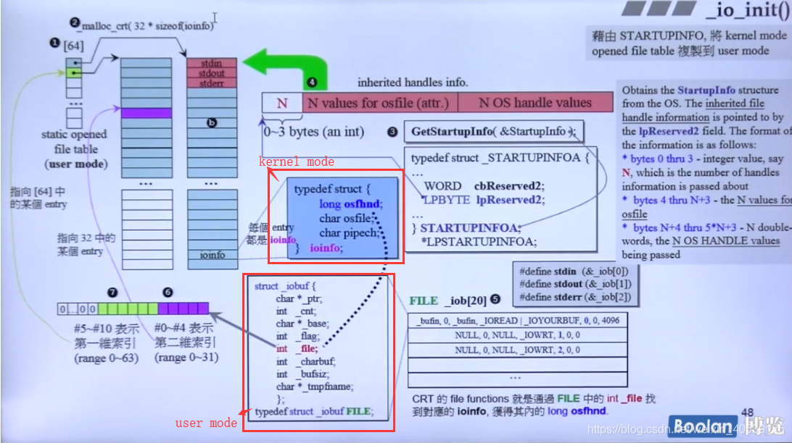
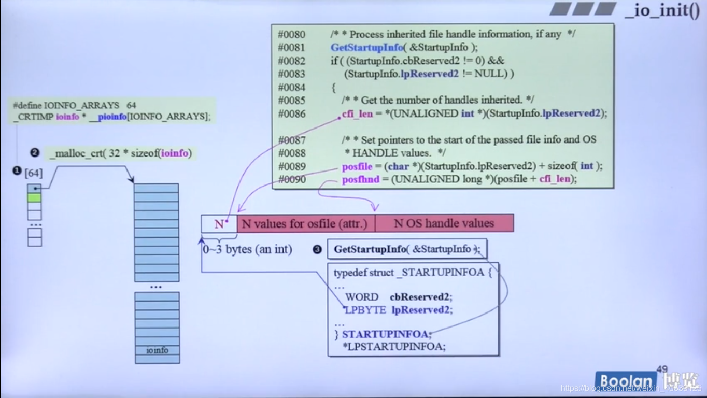
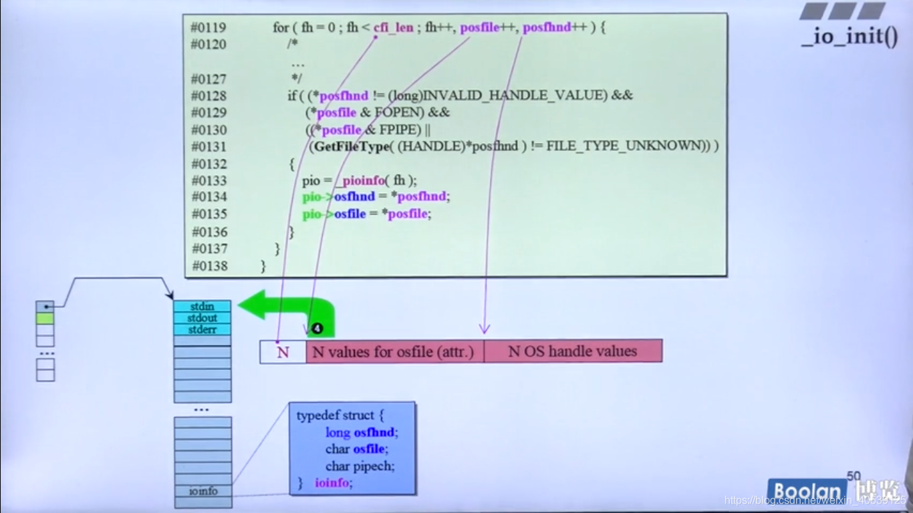
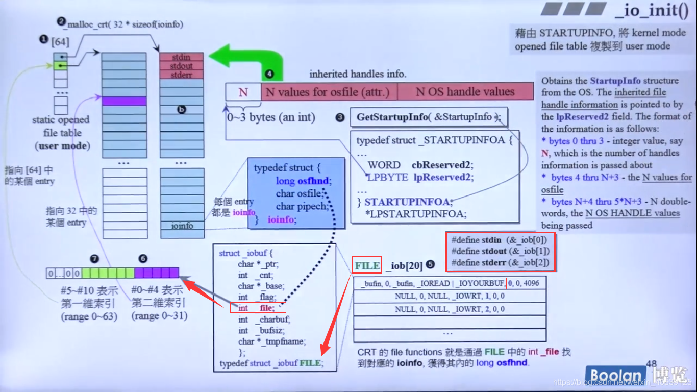

C++程序的生前死后
Table of Contents
startup
默认的startup函数是由 linker(连接器) 自己选择的
1. 内存初始化

内存块：
- 从哪里来
- 大小多少
- 回收到哪 SBH(Small Block Heap)：应付CRT本身以及main进去之后的所有内存（size=1024=1k）。
如果客户要的区块大小要小于sbh_threshold（size=1016，加上图中的上下的00000131(各占4个字节)，1016+8=1024，即1K），将从sbh内部去申请内存。反之，使用HeapAlloc(win提供的API函数)，让操作系统提供服务。
因此，内存小于等于1K的，VC6认为它足够小，它将使用SBH去服务它。反之，若大于1K，将有操作系统那些"池塘"（HeapAlloc等函数）来提供。（内存块从哪里来）
HeapAlloc:HeapAlloc是Windows提供的API，在进程初始化的时候，系统会在进程的地址空间中创建1M大小的堆，称为默认堆（Default Heap），该大小为默认值，可以通过/HEAP连接器开关进行修改。用户也可以通过HeapCreate创建额外的堆，堆的使用可以更有效的进行内存管理，避免线程同步的开销以及快速的释放内存等
我们可以向操作系统要求 A 一大块内存，B 一大块内存，C 一大块内存，我们可以根据不同的用途从不同的内存块获取
SBH初始化: 给我一块区域，大小4096(初始值，可以弹性增长),取名为 crtheap heap_init 在初始化的时候申请了 16 个header，每个header的内部情况
{kind=link}
{kind=link}
2. io 初始化，包括 printf，cout 等等
1. 内存分配
线膨胀大小决定要多大的内存，然后去那内存，拿完后函数返回，设置区块串接 malloc_crt:
- 调试模式 使用一般的 malloc 分配内存
- 非调试模式 malloc——dbg 分配内存并且登记一些信息
_ioinit() 需要分配内存 会对第一步所申请到的内存进行一系列的包装
对于vc10，不在执行一些函数，图中展示了 heap_alloc_base 的源码

void __cdecl _ioinit(void)
{
...
// 只有这一段与内存有关，是用来分配内存的
// IOINFO_ARRAY_ELTS 32
// sizeof(ioinfo) 8
if((pio = _malloc_crt(IOINFO_ARRAY_ELTS * sizeof(ioinfo))) == NULL)
...
}
在调试模式下，要加上上下文等关键信息，加完的长度要登记在cookie之中(图中的 00000131，在之前的 130 的基础上需要加一个 bit 位来登记状态)，最后还要进行字节对齐
0x100(内存块的大小) + 0x24(36) + 0x8 = 0x12c -> 0x130
heap_alloc_dbg heap中，需要分配内存的地方可能是 CRT 本省，也可能是应用程序，在要完内存之后，如果小于 1k，区块就膨胀，之后回去SBH挖取一小块内存，然后区块将被串接起来，就像图中的Debug Heap链表
{kind=link}
{kind=link}
- heap_alloc_bae
-
内存检查，如果小于1k就从SBH中拿取，大于将从操作系统中拿取 这里的 __sbh_threshold 为 1K

2. 从SBH拿内存(ioinit)

在32位的电脑上没有64位的变量，bitvGroup被分为了Hi和Lo两部分，BITVEC是unsigned int型，为32位。所以共有[32]组，每组64bits，64位的电脑上可以直接使用一个64位的变量解决 在管理内存的时候，我们是先挖出一大块，然后有需要的时候就切一块，当回收的时候就归还内存，对于使用单个元素大小一样的内存块，管理内存尽量把它们连接到一起(要么就是物理虚拟地址连接，要么就是链表)，这种设计准备了 64 条链表，用于管理 64 种不同类型的变量，归还的时候，对于有着相同大小的元素的区块，就把它链接到对应的链表上


每次都能申请 1MB大小的内存，分为 32个group，每次使用的时候先使用 1/32，也就是 32k，再把32k切成 8 块，每块就是 4k

当切出130bytes出去立马就变成了131bytes了，因为它的这个设计需要1个bytes表示它的状态是给出去了还是在SBH手中 0xffffffff表示为-1（上下个占8个byte），用来防止链表合并,0xffffffff表示为-1（上下个占8个byte），用来防止链表合并。4096-8*2=4088。前面讲过希望设计大小是16的倍数，最靠近16边界的是4080，因此8bytes保留。 总结:
- 首先，我们有16个header，每一个header管理的事情是1M里面的32K切成8块，这8块是由64条链表来管理。
- 一开始是最后一条链表负责把page8链接起来（130=304/16=19，从0开始排列，19-1=18。理论应该是#18 List进行供应，但因为现在这些链表都是空的，只有最后一个链表是有挂载page，所以第18号链表是空的，最后发现最后一个链表的page起着作用，所以在page中把130bytes切出去了）
- 在page中把130bytes切割出来。130bytest、是所有程序都会面临，_ioinit()需要的内存大小就是130bytes，于是剩下ec0bytes 。这就是首次内存分配。
- 接下来对page1继续切割（只有当page1 内存切割完成后，才会去切割page2的内存），当切割至第15次，开始释放
链表的各自任务是以16在变化的，所以由#35 链表进行回收。#35 链表的指针将指向240bytes的地址。 当第16次分配内存时，将分配b0大小,操作系统将从之前释放的240bytes中的空间重新切割,240-b0=190，剩下的190将重新分配给#24 List维护管理。所以，内存切割分配是个动态的过程，不断调整所属的链表。
各个元素大小相同的空区块将会合并，合并后的区块也会被串起来，然后合成一整个大链表，每个链表的头尾都有 0xffffffff 作为分隔符，保证它们不合并


3. 获得命令行参数
4. 获得环境变量
一共会分配 240H来储存，这里面有 10 条指针，每一条指针都指着一个 指向环境变量的字符串，实际上10条指针所指向的字符串的长度之和不到240H，但经过一系列的膨胀等操作，最后就变成 240H
在VC环境中，我们发现main()函数共有三个参数，其中包含一个独特的参数_environ。当然，不同的平台main的参数是不同的，我们需要注意的是calling convention。

_environ：pointer to pointer tabale，table中的每个entry都是指向环境变量的字符串的指针，一共有10个指针 我们可以查找到 _environ的首地址，，并且根据其指向的是指向字符串的指针，而字符串总是由‘\0’结束，四个字节为一个指针，因此，共有十个指针，需要注意的是其所指向的字符串的长度。

可以验证之前在程序最开始所分配的内存大小 240 H，每一块内存都需要加上 cookie 然后再补充到 16 的整数倍，但是还没有到达240H，只有230H，在经过一系列膨胀等操作，最后变成240H

这里分配的 240h 的内存再之后设置完 envp 就会被释放掉，其实就是把 操作系统中的环境变量都给获取拷贝过来，之后就释放掉了
5. 设置argv
argv 格式(假设 argv 为 n) : 连续的 n 个字符，最终用 /0 结束，n个指针分别指向 n 个字符串，这个其实就是执行的 c程序 所生成的 .exe 文件的绝对地址，在进行膨胀
例如: 这个地址有55个字节，那么字符串长度就是 56，那么这一块字符串所占的长度就是 4+4+56 = 64，在经过一系列膨胀，最后变成大小为 100h 的内存 => 0x64h
6. 设置envp，就是当前程序运行环境的参数
这个操作指令引发了 11 次环境分配，每一块都要分成如上图所示的链表，把内存链接起来，所占用的内存大小就是 11*4+36(膨胀) => 80 这个环境分配的顺序就如上图所示，首先分配最下面的
7. c 初始化
8. 进入 main 函数
mainret = main(__argc,__argv,_environ) 在不同的平台，参数数量不同
9. exit(0) 退出程序
自定 Startup code
一个例子:
#include <windows.h>
int MyStartup(void)
{
int a = 10;
HANDLE crtHeap = HeapCreate(HEAP_NO_SERIALIZE,0x010,4000*1024);
int*p = (int*)HEAPAlloc(crtHeap,HEAP_ZERO_MEMORY,0x010);
int i,j;
for(i = 0;i<100;i++)
{
for(j = 0;j<100;j++,p++)
{
*p = i*100+(j+1);
}
}
MessageBoxA(NULL,p,"abcd",MB_OK);
return 0;
}
但是需要设置，令程序在开始的时候执行的是我们自定义的 MyStartup 而且，main 函数需要使用启动代码调用
windows heap manager
在c程序运行的时候，会创建一个 heap，这个heap大小小于 4MB，在首地址偏移 178(16进制) 位的位置上，有 128 个free list，自由的双向链表，每个链表就是一对指针，所以所占的内存大小就是 128 * 8 就是 0x400，这一块内存是连续的，这些链表的指针所存储的地址信息都是颠倒过来的，每条链表的两根指针都是指向的同一位置 这些链表只有第一根链表是指向的一个区块，其他的指针都是指向的自己所在的链表，没有指向任何自由区块 在windows里的自由区块有cookie，但是windows里的cookie是一种上下融合的，即表示上一块的大小也表示下一块的大小，虽然跟 C++ 程序里的内存分配的自由区块的分布方式不同，但是作用都是相同的 但是首个区块的 cookie 中并没有前一个区块的信息，存储的内容应该另有意义 Header 用以记录本区块和前一个区块的大小，长度大小的单位是 单元，每个单元的大小就是 8bytes，这样的用意就是: 长度为 n+1 的区块回收的时候，就会挂载到 free[n], 就是第 n 条链表，因为每条 free list 的"责任间隔"就是 8
例如: 在程序中如果声明了需要 1024 个字节的内存，那么就会从第一个自由区块中分配 1024 个字节的大小，就是80个单元，但是实际上是分配了 83 个单元 80(1024) + cookie(1) + tail for debug(2) = 83个，剩下的内存就是 原来的 - 83 个单元，剩下的区块依旧挂载在第 0 块自由区块，剩下的内存会生成一个cookie，这个cookie里存储的就是上一个内存块的大小(0x83)以及自己的内存块的大小
_ioinit() & fopen()
建议阅读下图右侧的备注


在一开始的时候就获得了一个静态的数组，这个数组里最多可以获得 64 根指针，就是静态指针，这个是由于一维索引有 6 位，也就是 $2^6=64$ ，二维索引有 5 位，也就是 $2^5=32$ ，所以程序最多可以打开 2048 个file
typedef struct
{
long osfhnd; // os file handle
char osfile; // os file
char pipech;
}ioinfo;
struct _iobuf
{
char* _ptr;
int _cnt;
char* _base;
int _flag;
int _file;
int _charbuf;
int _bufsiz;
char* _tmpfname;
};
typedef struct _iobuf FILE;
-
ioinfo：其对应到C/C++程序对应的fopen得到的变量（FILE fp=fopen("xxx.dat"，“wb”)中的FILE 变量）Linux 对应于 FILE 的是
File Desriptor(**fd**)，Windows 对应的则是file handle -
每个进程至少有三个 file handle（stdin，stdout，stderr），接下来的动作就是把继承下来的这三个或更多的 file handle 抄录到 struct ioinfo。所以，一个进程最多可以开出 64*32=2048个FILE，其中包括从父进程继承下来的部分。
-
操作系统通过函数
GetStartInfo()函数获得inherited opened file headles把继承而来的这三个或更多的file handle拷贝到struct ioinfo
Kernel Mode and User Mode

lpReserved2 将指向 inherited handles info 。字节0~3表示一个N值，代表了继承了几个file handle（原则上一般至少有stdin、stdout、stderr 三个file handle）。 N value for OSfile 则是 ioinfo 结构体中的 char os file，N OS handle values 则是ioinfo结构体中的 long osfhnd。
借由调用GetstartupInfo函数，取得lpReserved2指针，指向inherited handles info，取出N，OSfile，osfhnd，copy填入到ioinfo的结构体中。借由这种方式去登记/记载 父进程继承而来的file handle。


由上可知一个进程最多可以容纳/拥有/开启 32*64=2048 个 ioinfo 。而 fopen() 会去寻找一个还没有使用的
